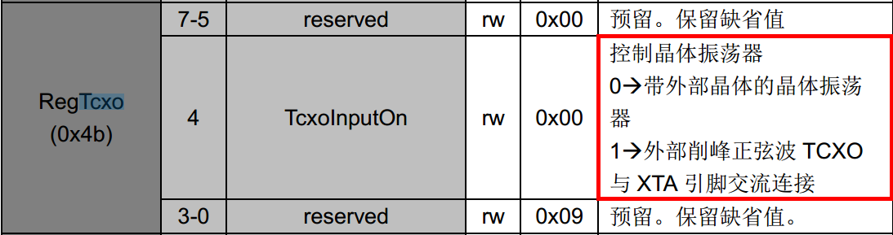
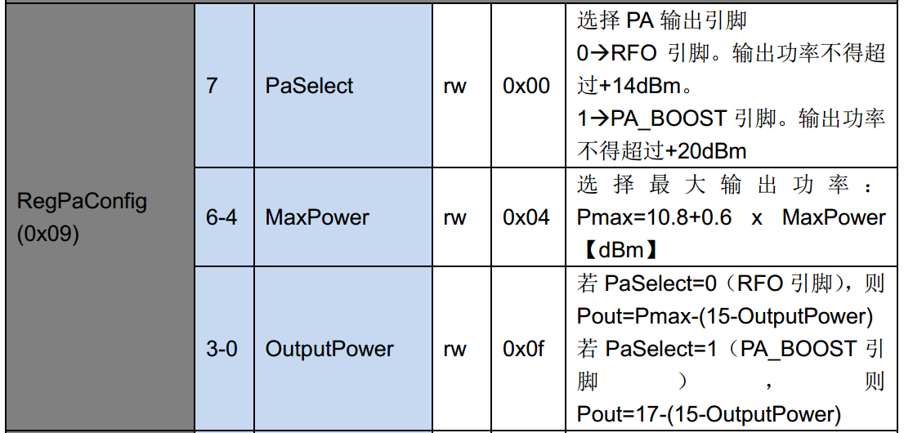
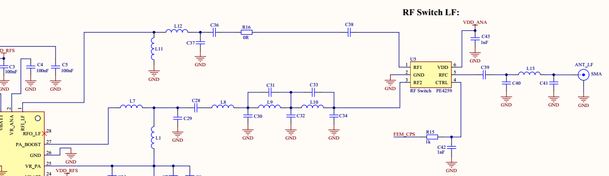

和硬件相关的问题
TCXO 的使用
根据SX1276数据手册，

如果使用TCXO,则需要配置RegTcxo寄存器为0x19,代码如下
123456789101112void SX1276SetTcxoConfig(void)//此函数为自定义的{SX1276Write( REG_TCXO, 0x19 ); //设置TCXO}//在初始化中调用void SX1276Init( RadioEvents_t *events ){...SX1276SetTcxoConfig();...}否则配置为0x09,因为芯片上电默认不使用TCXO，即上电寄存器值即为0x09,所以无需配置
PA_BOOST 引脚的使用
根据sx1276 数据手册

- 如果使用PA_BOOST作为RF输出，则需要配置PaSelect脚为1
|
|
- 否则为0
RXTX switch(接收和发送的天线电路的切换)

在图中可以看到，射频输入和射频输出是不一样的电路，但是用的是一个天线，所以用到了一个射频电路切换的芯片。
在程序中，需要做的就是控制FEM_CPS脚，在RX和TX时进行RF1(RFI)和RF2(RFO)的切换。
由于在设计中兼容高低频，并且使用两个引脚分别控制高频和低频部分的射频部分输入输出的切换，所以在实际使用中需要控制两个引脚。
如果只有高频或者低频一个部分，上面的代码只要保留相应的部分即可
RTC 相关的问题
由于原厂例程中使用的是32.768KHz的LSE给RTC提供时钟，而在本设计中，RTC使用的是LSI，所以，此处需要注意，
LSE的频率为32.768Khz，
根据Fck_spre = Frtcclk/(PREDIV_S+1)/(PREDIV_A+1)
例程中RTC的工作频率为32.778/(3+1)/(3+1) = 2.048Khz,
而内部晶振的频率约为37Khz，故PRVEDIV_S和PREDIV_A的值需要改变。
37/2.048 ~= 18；
数据手册里面有这样一句话：
Note: When both prescalers are used, it is recommended to configure the
asynchronous prescaler to a high value to minimize consumption.
所以：18 = 9*2；故设置PREDIV_A = 8，PREDIV_S = 1;